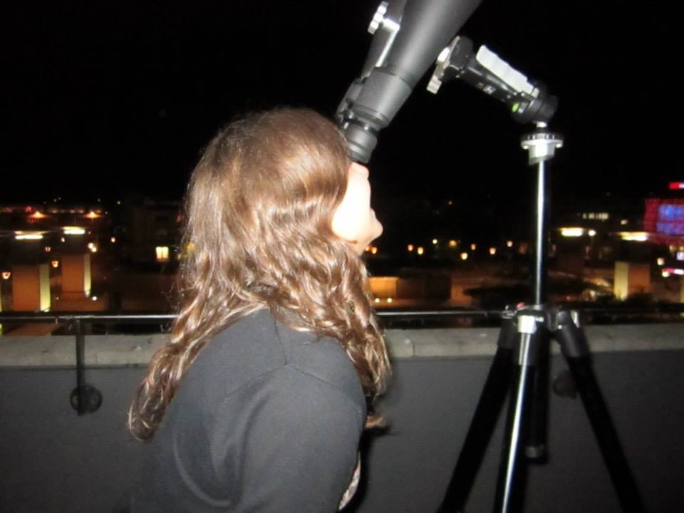

 I have always been intrigued by astronomy and the nights sky, however, I didn't realise I could have a career in this until I was 16! My family were shocked when I went from wanting to be an artist to wanting to be an astronomer. In 2012 I went to the University of Bristol to study an MSci in Physics. After graduating from Bristol in 2016, I was fortunate enough to begin a PhD in Astronomy at the Institute of Astronomy, University of Cambridge, UK. I study the end state of planetary systems around white dwarf stars, and what this can tell us about exo-planets. Find out more about my research here. From October 2022 I began a postdoc at the Institute of Astronomy, University of Cambridge, UK where I was able to continue my studies of white dwarf planetary systems, and from December 2024 I began a postdoc at NOIRLab in Tucson to continue this work.